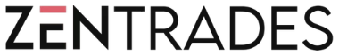

Enterprise SaaS, fintech & AI products. Case studies in dashboards, design systems, and AI-native products — built where clarity is the actual design problem.
Currently designing enterprise SaaS dashboards for Centricity WealthTech and ZenTrades.AI — investment platforms, field-service software, and the design system that holds it all together.
Independently designing and shipping Aimate, my own AI-visibility SaaS product, end to end.
I work across the full process — discovery and research, information architecture, UI design, usability testing — on products dense enough that clarity is the actual design problem.
Each opens a full case study — problem, process, and what changed.
Goal dashboard for relationship managers — two personas, competitive analysis, usability testing.
Five pain points drove the redesign of Centricity's insights engine — light and dark theme throughout.
OneDigital — user stories to full app architecture: profiles, asset allocation, two dashboards, a product marketplace.
Fixed Deposit vs. AIF — separate research, one unified dark mobile system.
Ownership of ZenTrades' design system and core dashboard suite — analytics, ticketing, scheduling & dispatch, inventory, job costing, plus mobile and tablet.
Understand the business problem and who is actually blocked by it.
Competitive analysis, personas, and design drivers grounded in real user constraints.
Structure before pixels — flows, architecture, and content hierarchy.
Visual system, high-fidelity screens, and interaction detail.
Usability testing and real feedback loops before and after ship.
Brand marks for both Aimate and ZenTrades.AI.

Content for ZenTrades.AI and Centricity WealthTech — product updates, feature spotlights, campaign creative, on each company's visual system.
Planned and ran internal company events at ZenTrades.AI and Centricity WealthTech, end to end — alongside core design work rather than as a separate role.
Bachelor of Design (B.Des)
Uttar Pradesh Institute of Design, Noida — Jun 2020
AI-Enhanced Design & GenAI for UI/UX (2024) · Advanced UX Design and Research, Udemy (2024) · Design Thinking & Agile Methodologies (2022)